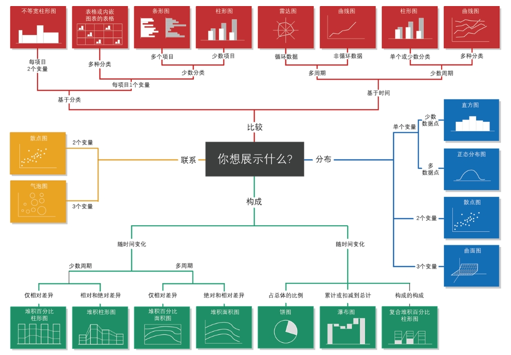
6 快速绘图：大数据可视化工具
在大数据时代，如何有效地展示和理解庞杂的数据变得尤为重要。快速绘图工具为研究人员和数据分析师提供了便捷的方法，帮助他们直观地展示数据中的趋势和模式。在本章中，我们将面向大数据可视化面临的挑战，探索几种常用的大数据可视化工具及其应用场景，旨在提升大数据解读与传达的效率。
6.1 可视化基本流程
有效探索大数据、对变量进行解释，并将大数据分析结果传达给不同受众的最有效方法之一是数据可视化。当我们处理大数据时，数据可视化可以在许多方面为我们提供帮助，例如：
- 了解变量的分布特征
- 检测数据录入问题
- 识别数据中的异常值
- 了解变量之间的关系
- 选择适合的数据分析变量（即特征提取）
- 检查预测模型的结果（例如准确性和过拟合）
- 向不同的受众报告结果
进行有效的可视化需要明确分析目标，然后再进行设计。有时我们可能已经知道有关数据的一些问题的答案；其他情况下，我们可能希望进一步探索和了解数据，以便为下一步的数据分析提供更好的见解。在此过程中，我们需要考虑许多可视化要素，例如要使用的变量类型、坐标轴、标签、图例、颜色等等。此外，如果我们打算向特定受众展示可视化结果，那么我们还需要考虑可视化对目标受众的可用性和可解释性。
有效的数据可视化通常包括以下步骤：
- 明确目标：确定数据可视化的目标，如探索数据、揭示关系等
- 准备数据：包括数据的整理、清洗与转换等
- 工具选择：根据数据可视化的目标选择合适的可视化工具
- 图形绘制：生成可视化，即对图形进行绘制
- 结果揭示：解释可视化中的信息，并将其展示给目标受众
图6.1展示了一些基于变量类型和可视化目的的数据可视化建议。在R中，几乎所有这些可视化都可以很容易地实现，尽管有时对这些可视化所需数据的整理可能相当繁琐。
6.2 大数据可视化面临的挑战
对大数据集中的某些特征和模式进行可视化主要面临两个挑战：大N问题和大P问题（示意图见图6.2）。大N问题是指一个数据集包含大量的观测值（行），以至于无法使用标准的数据分析技术在计算机上处理。可视化中的大N问题是指，根据绘图的类型，绘制包含大量观测值的原始数据可能需要很长时间，并生成很大的文件。大P问题则是描述一个数据集的变量（列）接近甚至多于观测值，使得使用传统分析技术寻找一个良好的预测模型变得困难或难以实现。在可视化中，由于在图中显示的数据量巨大，变量之间的关系错综复杂，导致模式识别变得更加困难。这两个挑战在探索性数据分析中非常常见，在可视化过程中有多种方案能够应对这些挑战，以下将会分别进行介绍。
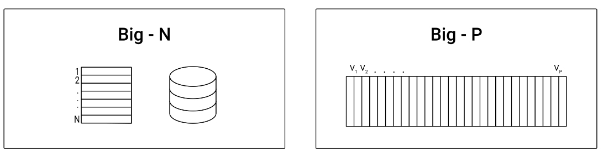
6.3 面向大N问题的可视化方案
一般来说，可视化中的大N问题是因为数据点过多导致可视化过程卡顿，甚至因内存不足而无法实现。下面我们举一个例子，比如我们构造100万个点，它们有横坐标x和纵坐标y。构造代码如下：
library(pacman)
p_load(ggplot2,pryr,bench,fs,tidyst)
x = rnorm(1e6,mean = 6)
y = rnorm(1e6) + 2 + 1.5 * x
data = data.frame(x = x, y = y)
object_size(data)
## 16.00 MB在上面的代码中，我们知道构造的数据大概占用了16.00 MB的内存空间。 然后，我们要使用ggplot2包来对这些点进行可视化，我们先生成这个图，然后观察这个图究竟占用了多少内存：
# 绘制图片
data_plot = ggplot(data, aes(x=x, y=y))+ geom_point()
# 查看内存占用
object_size(data_plot)
## 17.69 MB结果显示可视化的结果大概占用了17.69 MB的内存空间。我们来看一下对这个图进行可视化需要多长时间：
pst(print(data_plot))
# Finished in 20.8s elapsed (1.220s cpu)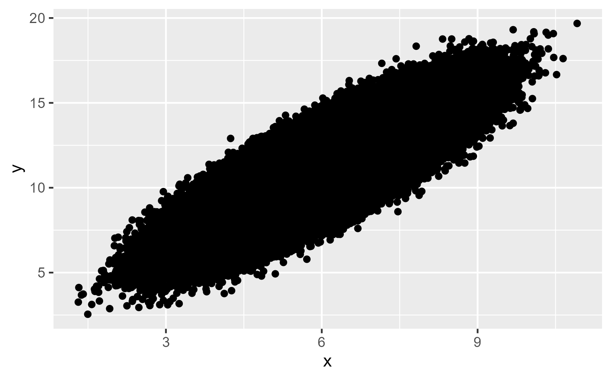
结果显示，大概需要20.8秒。如果要把这个图存起来，也需要耗费很多时间，而且还要占用比较大的空间（以保存为PDF格式为例，大概需要22秒，占内存约55 MB）。不同配置的计算机也许速度不一样，但是这个速度可以说相当的慢。这个例子给我们展示的就是可视化中的大N问题，要解决这个问题有多种方案，这里我们介绍两种：1、生成基于栅格的图形；2、先对数据进行汇总统计。
所谓生成基于栅格的图形，经常也叫做生成位图。默认情况下，大多数数据可视化库，包括ggplot2，都会生成基于矢量的图形。一般来说，当绘制的观测值数量较少或中等时，这对于任何类型的图来说都是非常合理的，矢量图形在坐标系中将线条和形状定义为矢量。在散点图中，每个点的x和y坐标都需要被记录下来。相比之下，位图文件以矩阵（如果涉及颜色，则为多个矩阵）的形式包含图像信息，每个矩阵单元代表一个像素，并包含该像素的颜色信息。虽然绘制少量观测值的矢量图表示可能比同一图的高分辨率位图表示更节省内存，但当我们绘制上百万个观测值时，情况很可能会相反。在R中，可以使用scattermore包对这种方法进行实现：
p_load(scattermore)
# 绘制图片
data_plot2 = ggplot(data,aes(x,y))+
geom_scattermore()
# 测试速度
pst(print(data_plot2))
# Finished in 0.920s elapsed (0.170s cpu)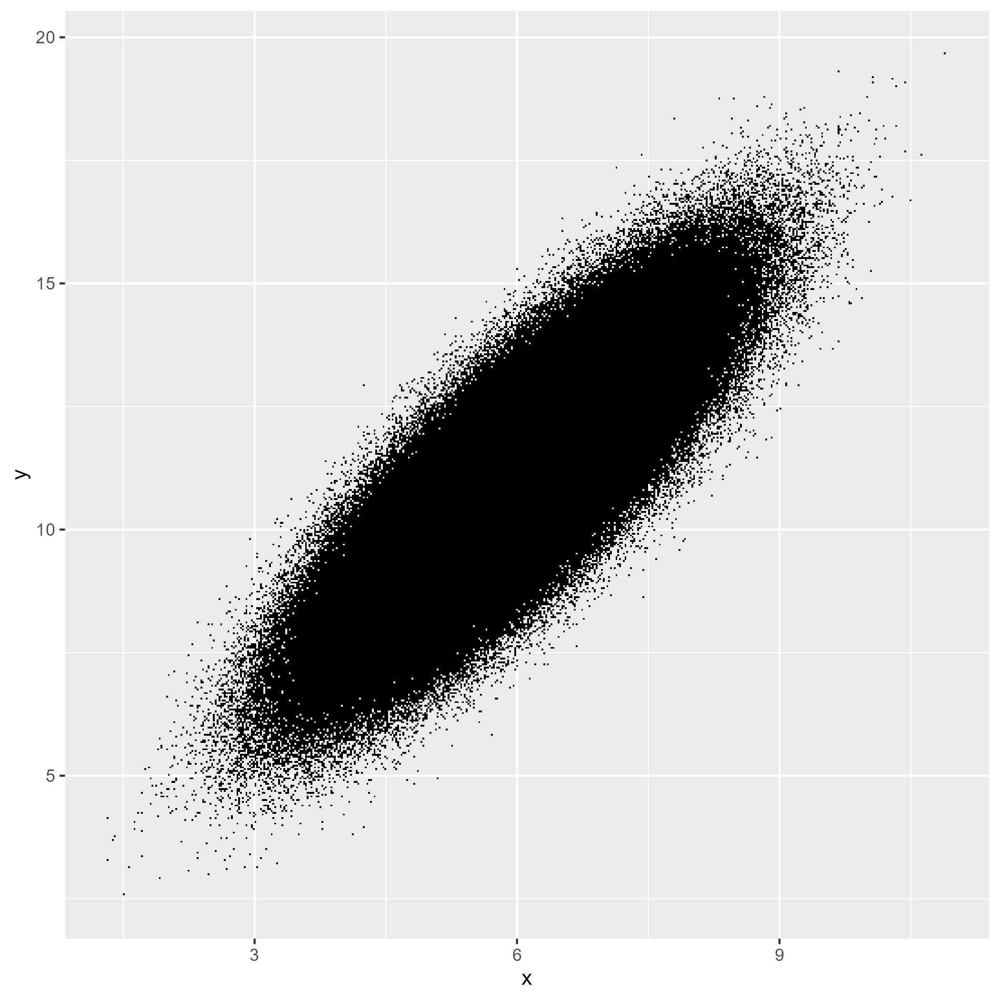
另一种方案是使用汇总数据，也就是说实际上可能不需要直接绘制所有的观测值，而是先对数据进行汇总，然后对汇总结果进行可视化。比如在我们上面这个例子中，可以将画布分成网格单元（通常是矩形或六边形），计算每个网格单元中将包含的观测值或点的数量，然后通过单元的颜色层次表示每个网格单元中的观测值数量。ggplot2中可以用geom_hex函数对这个功能进行实现：
# 绘制图片
data_plot3 = ggplot(data, aes(x=x, y=y))+
geom_hex()
# 测试速度
pst(print(data_plot3))
# Finished in 0.440s elapsed (0.060s cpu)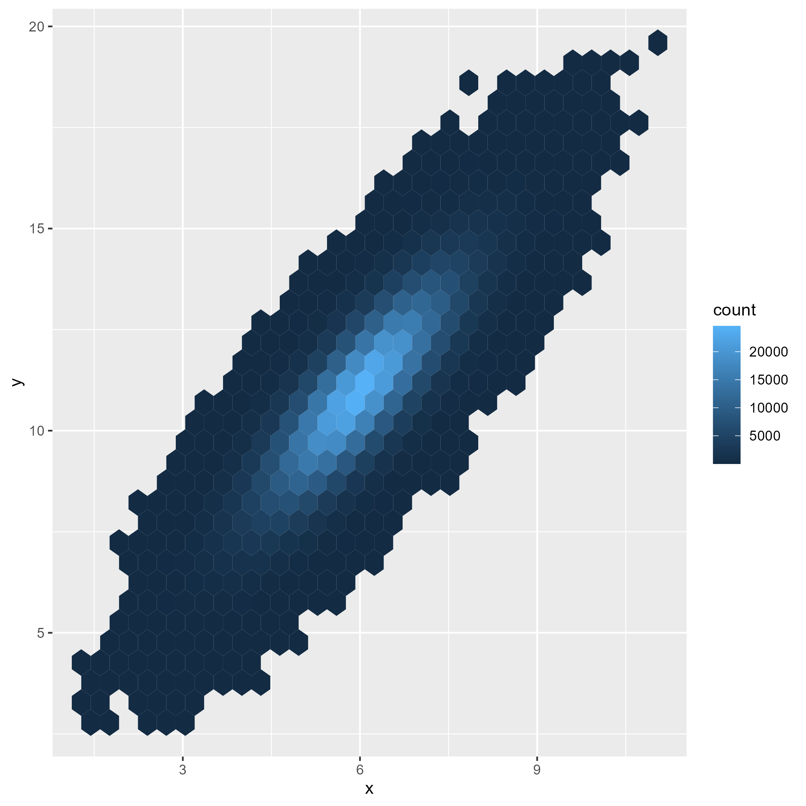
总体而言，先对数据进行汇总，然后在进行可视化是最常见的可视化模式（常用的图形类型包括分布图、箱线图等）。无论数据量大还是小，先对数据进行统计，然后在进行可视化，能够大大提高可视化的效率，同时也让读者能够更加直观地对数据进行审视和探究。
6.4 面向大P问题的可视化方案
在可视化问题中，大P问题往往是指变量较多的情况，需要对变量之间的关系进行探索，因此需要采用合适的可视化手段来清晰地进行表达。这里，我们将会采用R语言工具进行实现，来介绍在R中是如何使用不同的方案来应对可视化中的大P问题。
6.4.1 分面与分组的应用
理论上来说，低维数据可视化并不算大P问题，但是如果要对多个低维数据进行可视化，并进行比较，那么它就成为一种特殊的大P问题。解决低维数据可视化的大P问题，通常是通过分组或者分面来处理的。
分组是指以某一个离散型变量作为分组变量，然后对其他变量进行分组可视化的过程，分组后各个组别之间可以使用颜色、形状、大小、线型、透明度等要素加以区分。我们以ggplot2所带的diamond数据集为例，用密度分布图对不同颜色的钻石深度分布进行可视化：
library(pacman)
p_load(tidyverse,ggridges)
# 选取部分数据
df = diamonds[1:100, c("color", "depth")]
# 进行可视化
ggplot(df,aes(depth,color)) +
geom_density_ridges(aes(fill = color)) # 对不同的分组采用不同的颜色Picking joint bandwidth of 0.678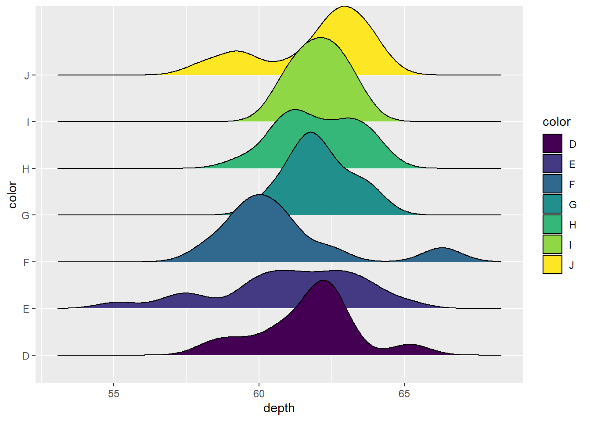
根据上面的图，我们根据color这个离散型变量对密度图用了不同颜色进行填充，这样可以直观地知道不同颜色钻石深度的分布情况。分组允许你在单个图中绘制多个变量，使用颜色、形状和大小等视觉特征。而在分面中，一个图由几个独立的小图组成，相当于先用某离散型变量对数据进行分组，然后再对图形进行分别绘制。沿用上面的例子，如果采用分面绘图，其实现方法如下：
ggplot(df,aes(depth,color)) +
geom_density_ridges() +
facet_wrap(~color,scales = "free") +
theme(axis.text.y = element_blank())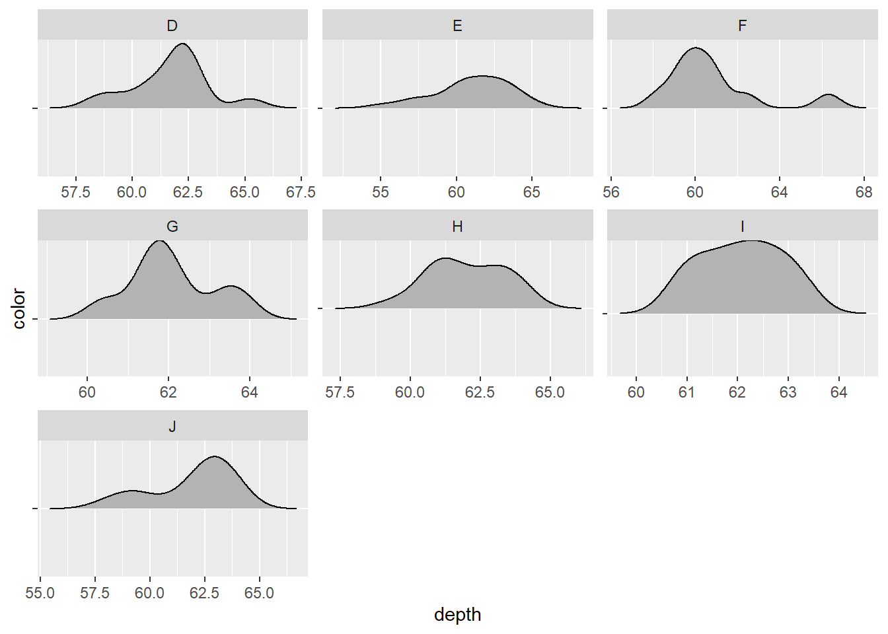
根据上图显示的结果，我们可以看到对于每一个颜色，都绘制了一幅分布图，这种方法可以在没有颜色填充的情况下依然对各个情况进行区分。
对于低维分布图的可视化，还可以使用包括箱线图、小提琴图、直方图在内的各种图形，这里仅仅强调分组和分面在解决低维数据可视化大P问题中的应用，因此不再对其他类型的图片进行赘述。感兴趣的读者可以尝试使用其他的可视化方法来对其进行实现。
6.4.2 高维数据可视化
试想一下这个问题，一个平面展示的信息图，最多可以表示数据表格中的多少个变量？我们不妨使用iris数据集来做一个试验。如果仅仅是对一个变量的分布进行展示，那么就只展示了一个变量：
ggplot(iris,aes(Sepal.Length)) +
geom_histogram()`stat_bin()` using `bins = 30`. Pick better value with `binwidth`.
如果是表示两个连续变量（这里使用Sepal.Length和Petal.Length两个变量）关系的散点图，那么就展示了两个变量：
ggplot(iris,aes(Sepal.Length,Petal.Length)) +
geom_point()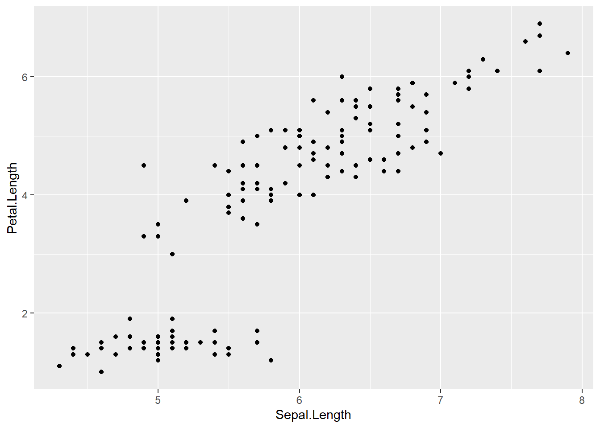
在上面的基础上，在对每一朵花的物种类别加以区分，就表示了三个变量：
ggplot(iris,aes(Sepal.Length,Petal.Length)) +
geom_point(aes(color = Species))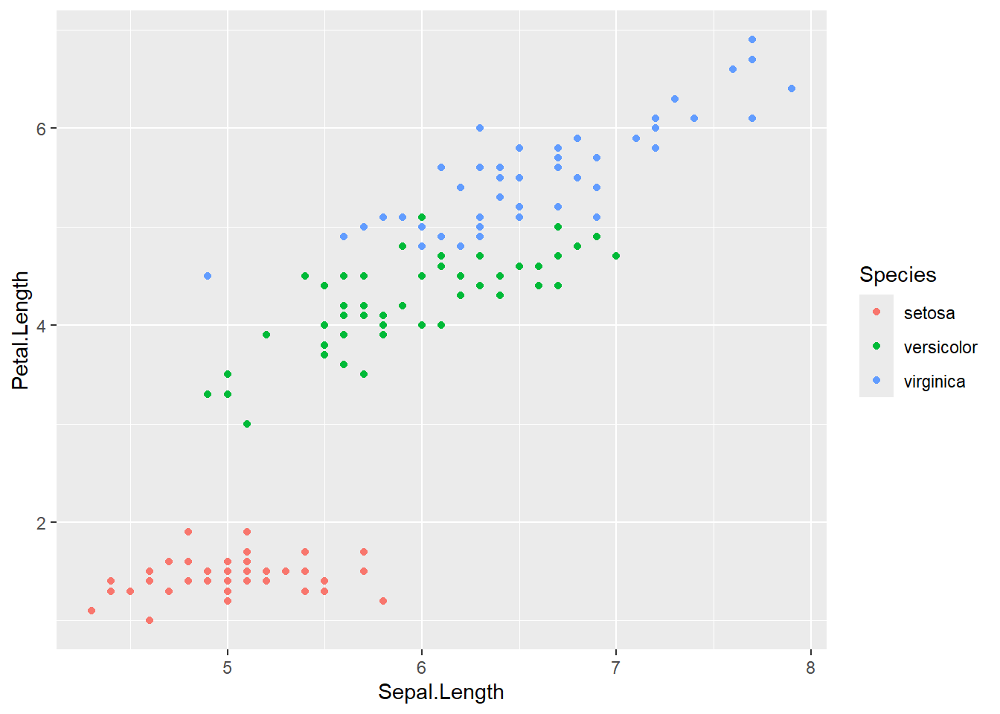
如果我们还想对Sepal.Width这一变量进行展示，可以调节点的大小：
ggplot(iris,aes(Sepal.Length,Petal.Length)) +
geom_point(aes(color = Species,size = Sepal.Width))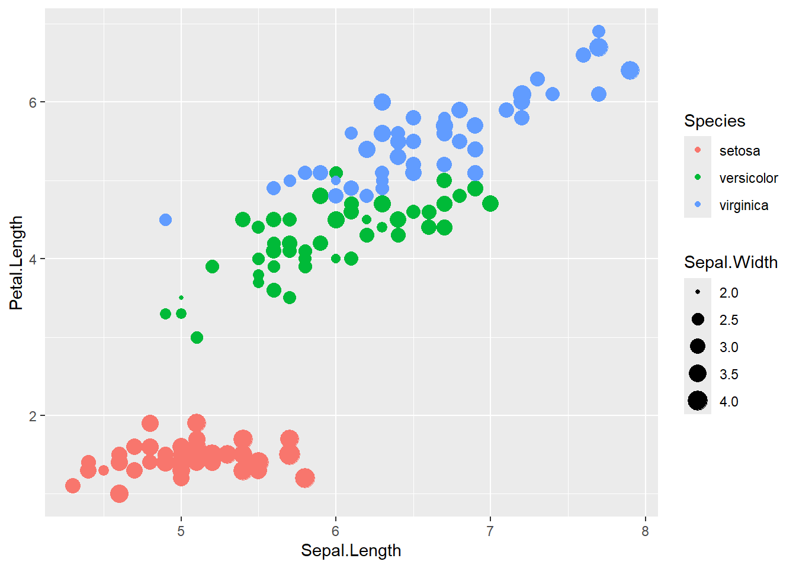
如果还想对Petal.Width进行展示，还可以利用透明度这一要素：
ggplot(iris,aes(Sepal.Length,Petal.Length)) +
geom_point(aes(color = Species,size = Sepal.Width,alpha = Petal.Width))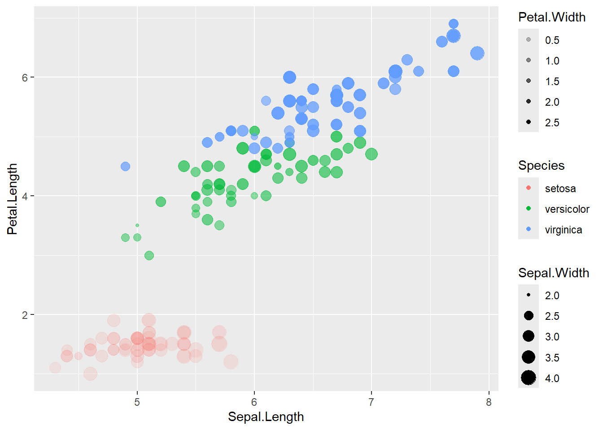
那么我们就用一个图对4个变量都进行了表征。当然上面这类可视化并不一定是值得鼓励的（因为不同变量之间是并列关系，使用不同的可视化要素进行区分是不妥的），仅仅是为了展示一个平面图可以对多个变量的信息进行表征。基于iris数据集的特点，其实还可以使用其他方法展示数据集中的所有变量：
# Libraries
p_load(GGally)
ggparcoord(iris,
columns = 1:4,
groupColumn = 5,
scale = "globalminmax") 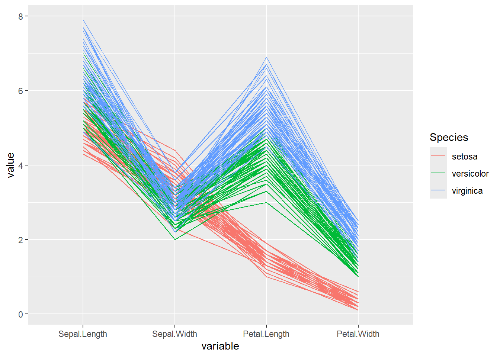
看到上图生成密密麻麻的折线，我们其实可以知道，如果观测值非常多的时候，那么它不仅仅是一个大P问题，还是一个大N问题，这会使得可视化的过程非常难以实现。这种情况下，最好能够先对数据进行汇总，然后再进行展示。举例来说，我们可以通过计算变量的均值和标准差，来展示其数据分布情况并进行比较，实现方式如下图所示：
iris %>%
group_by(Species) %>%
summarise_if(is.numeric,list(mean = mean,sd = sd)) %>%
pivot_longer(-Species) %>%
separate_wider_delim(name,delim = "_",names = c("name","class")) %>%
pivot_wider(names_from = class) %>%
ggplot(aes(Species,mean)) +
geom_pointrange(aes(ymin = mean-sd,ymax = mean+sd,color = Species),
show.legend = F) +
facet_wrap(~name,scales = "free_y") +
labs(y = NULL) +
theme_bw()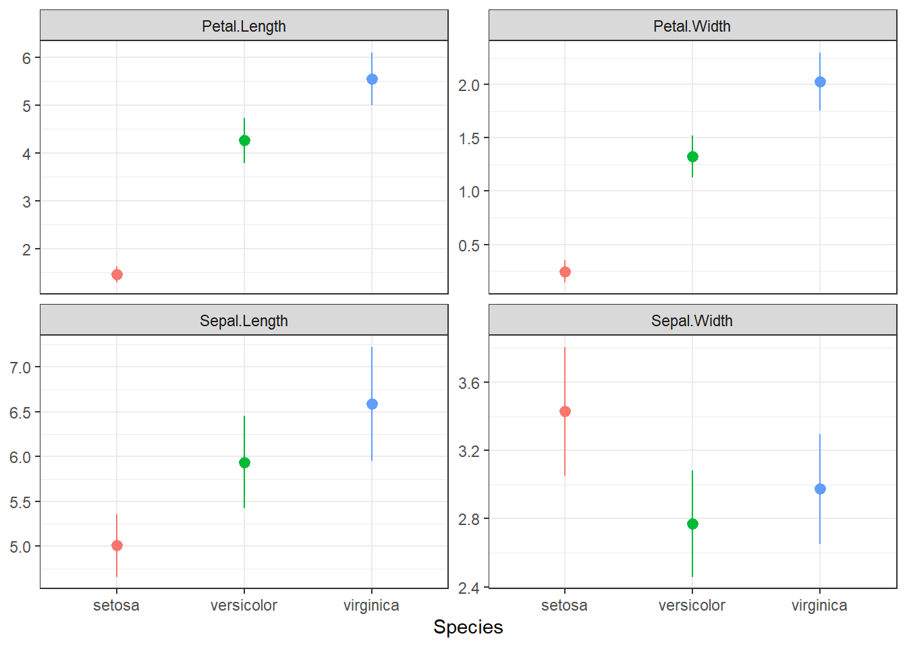
上面的图中，圆点表示平均值位置，线条表示一倍标准差的范围。这种可视化方法可以减少绘制成本，而且也能够让表达的信息更加集中而清晰。
有的时候，我们要探索的不是数据的分布状况，而是数据之间的相关性。这可以用散点图来对多个变量的两两关系进行可视化：
ggpairs(iris,columns = 1:4)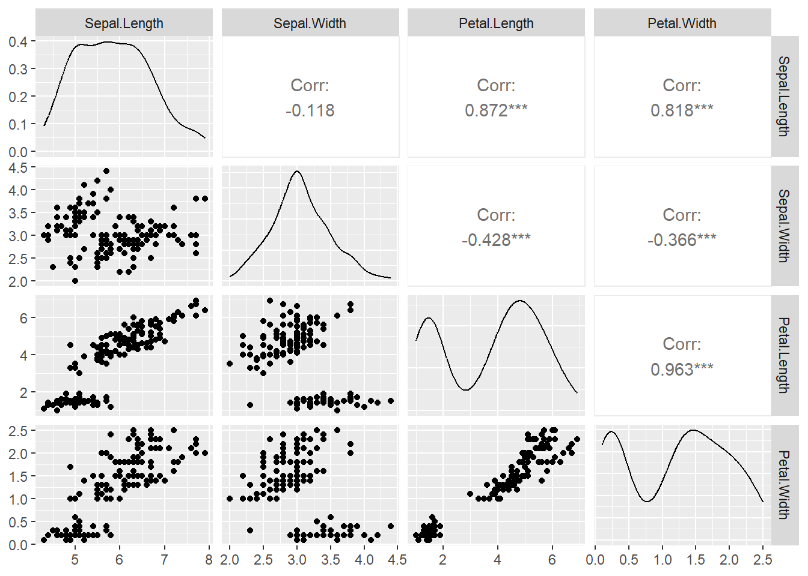
在上面生成的图中，左下角是两两变量之间的散点图，对角线则表示该变量的分布状况，右上角则显示了变量之间的相关系数及其显著性信息。此外，我们还可以对这个信息进行分组计算，实现方法如下：
ggpairs(iris, columns = 1:4, aes(color = Species, alpha = 0.5))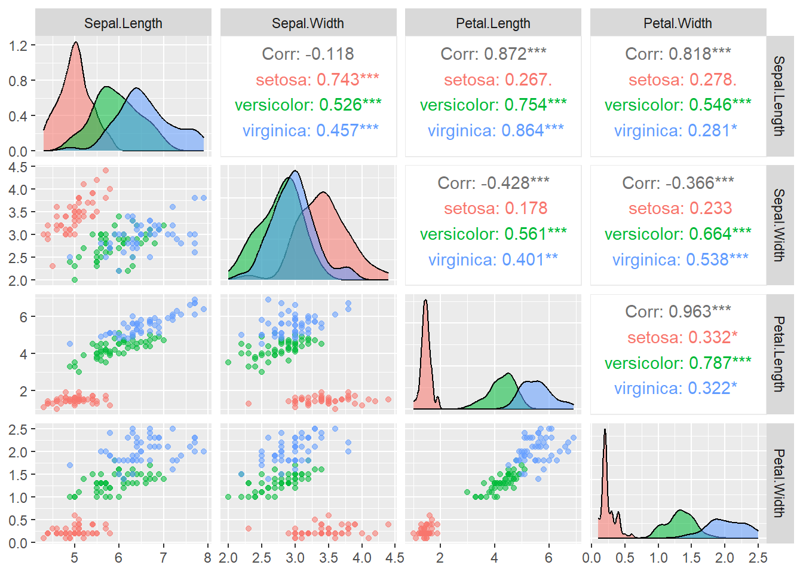
在生成的结果中，散点图对三个物种用颜色进行了区分，对角线中是三个物种的不同变量的分布状况，而右上角的相关系数也对各个物种进行了分别计算。
我们知道，当观测点过多的时候，散点图依然无法进行有效的可视化，更好的方法是只取相关系数信息，然后进行可视化。一般会使用相关性热图来对这种信息进行可视化，实现方法如下：
p_load(ggcorrplot)
corr = round(cor(iris[,-5]),1)
p.mat = cor_pmat(iris[,-5])
ggcorrplot(corr,
hc.order = TRUE,
type = "lower",
p.mat = p.mat,
lab = TRUE)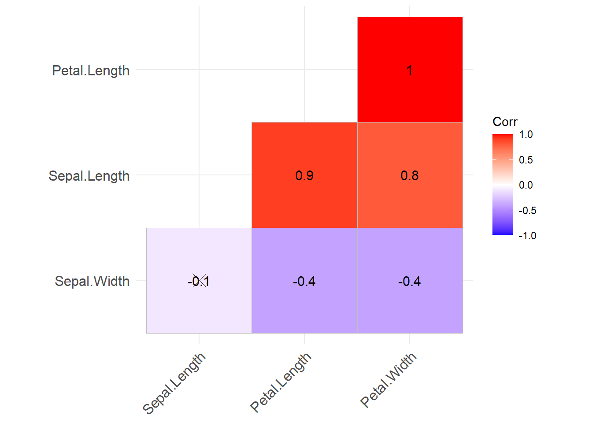
上图显示了两两变量之间的相关性分析可视化热值图，如果方框中有交叉（“×”）表示这两个变量的相关性不显著，而方框中的数字表示两个变量之间的相关系数，其中相关系数越大则颜色越红，越小则越蓝。
6.5 小结
本章我们对大数据可视化的相关主题进行了探讨，首先熟悉了可视化的基本流程，然后点明在对大数据进行可视化的时候会遇到的挑战。最后，针对一些典型的大数据可视化问题，我们描述了如何用合理的方案进行应对。尽管我们的案例数据并不大，但是这些方案在处理大数据的时候会非常奏效，能够为用户节省很多的操作时间和空间。